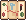
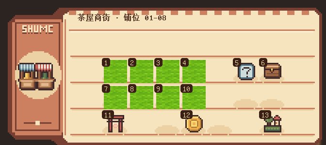
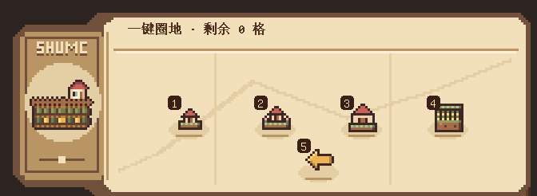
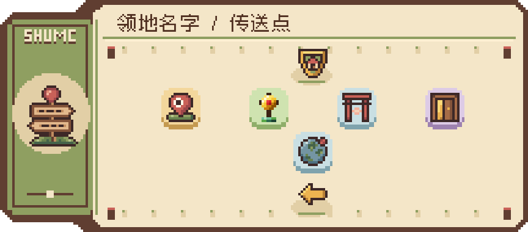

领地与家
在哪安家：主城里租庄园和商铺，或者出城门在樱花山谷自由建造、圈地保护；回家、授权好友、开箱子商店
三种安家方式
| 环城庄园 |  商业街旺铺 商业街旺铺 |  城外自由区 | |
|---|---|---|---|
| 大小 | 31×31，自带一栋木屋 | 15×15 双层临街店，带精装店面 | 你圈多大就多大 |
| 费用 | 30 币 / 7 天 | 50 币 / 7 天 | 免费（用领地额度） |
| 数量 | 12 块（H01–H12），每人限 1 块 | 8 间（01–08），每人限 1 间 | 不限 |
| 到期 | 不续租就自动收回，变回待租；可以提前续租叠加天数 | 永久，不重置 | |
| 指令 | /dipi | /playershop | 金铲子 / /lingdi |
| 能建多高 | 一直到世界顶 Y 511（往下：庄园到地坪下 6 格、店铺到地坪下 4 格） | Y -64 ~ 511 | |

新手见面礼的 30 币刚好够租一块庄园 7 天。资源世界每周重置，千万别在资源世界里盖家。
环城庄园 /dipi
/dipi（别名 /地皮、/租地、/买地）打开庄园列表：绿色是空地，左键传送到门口看房，右键直接租下。12 块庄园分布在北苑 H01–H03、南苑 H04–H06、西苑 H07–H10、东苑 H11–H12。
| 指令 | 作用 |
|---|---|
/dipi rent H05 | 租下指定庄园 |
/dipi renew | 续租（叠加 7 天） |
/dipi home | 传送回自己的庄园 |
/dipi tp H05 | 去某块庄园门口看看 |
/dipi template 风格 | 一键换整套装修：cottage 木屋 / sakura_garden 樱花茶庭 / farmstead 农庄（成套 120 币），flat 清空草坪（免费） |
/dipi trust 好友 / untrust | 授权 / 取消好友在庄园里建造（搭子自动共享） |
/dipi unrent | 退租 |
换装修会清到天上
庄园和店铺不限高，能盖高楼、空中花园。但换模板 / 清空草坪（/dipi template）、换装修 / 清空地基（/playershop style）会把这块地正上方一直到世界顶的东西都清掉，高处会分几秒慢慢清空，清的时候高处暂时不能放 / 拆方块。换之前先把高处的东西收好。退租不会动你的方块。

商业街旺铺 /playershop
/playershop（别名 /玩家店铺）：正南商业大街两侧 8 间 15×15 双层店铺，租下后随便改建，还能在店里开箱子商店。用法和庄园一样：rent 01 / renew / tp / unrent / trust 好友，一键装修是 /playershop style teashop|blacksmith|florist|empty（成套 120 币，清空免费）。


城外自由区与圈地
走出东南西北任意城门（离主城中心约 116 格以外），整片樱花山谷都能自由生存建造，开服后永不重置。主世界可以建造的高度是 Y -64 ~ 511（比原版的 319 高出近 200 格），塔楼、空中花园都放得下。为了不被别人动你的东西，记得圈地：
- 金铲子：手持金铲子（或杂货铺的
 茶屋金铲圈地杖）分别右键两个对角方块，就能圈出一块受保护的领地，别人不能破坏或开箱。
茶屋金铲圈地杖）分别右键两个对角方块，就能圈出一块受保护的领地，别人不能破坏或开箱。 - 放第一个箱子：在野外放下你的第一个箱子会自动圈出 9×9。
- 领地额度：圈地按面积扣「额度」（1 格 = 1×1 地面）。菜单显示新玩家初始 400 格，在线每小时再 +150 格；用金铲子手动圈的一块至少要 100 格。
/abandonclaim放弃领地时额度全额退回。手里拿根木棍右键可以查看附近领地的边界。 /lingdi（别名/领地、/圈地）：领地便携管理面板。⚡ 一键圈地以脚下为中心圈 11×11 / 15×15 / 21×21 / 25×25（消耗领地额度）；快捷扩容朝你面向的方向推出 3 / 5 / 10 / 20 格；还能看「我的领地」列表、高亮边界与中心点、管理好友权限，第 2 行是 🧩 圈新地并合并 · 📍 名字 / 传送点 · 👩🌾 帮工。
| 领地指令 | 作用 |
|---|---|
/trust 玩家名 | 允许好友在你的领地里建造和开箱（站在领地里只管这一块，站在野外管你全部领地） |
/untrust 玩家名 | 取消好友权限；/untrust all 清空所有人 |
/trustlist | 看脚下领地信任了谁 |
/extendclaim 格数 | 把脚下领地朝面向方向扩大 |
/abandonclaim | 放弃脚下的领地 |


🧩 圈新地并合并 /lingdi merge
想把领地扩成任意大小的长方形、或者把挨着的几块领地并成一块：/lingdi 领地管理第 2 行的 🧩 圈新地并合并（或 /lingdi merge）。
- 站到想圈的长方形一角，点 📌 角点 1（或
/lingdi pos1）；走到对角，点 📌 角点 2（/lingdi pos2）。 - 菜单顶上会写出方案：最后的范围、中心、做法（圈新地 / 合并几块）、要扣多少额度。点 👀 预览范围画出来看看。
- 点 ✅，确认页再点 ✔ 确认 才真正执行。
- 选区没碰到你的领地：直接圈一块新地（每边至少 5 格、面积至少 100 格），扣整块面积的额度。
- 选区碰到或包住你的一块或多块领地：并成一块——保留面积最大的那块（编号不变），扩成包住「选区 + 这些领地」的长方形，其余几块的信任名单抄过去再删掉。只扣净增面积的额度。
- 你的私人领地 / 小镇也可以并进来，它一定是保留的那块（成员、子领地都不变），面积够了就能升级成小镇。两块私人领地 / 小镇不能互相合并。
- 做不了的情况（菜单里会红字说明）：碰到别人的领地或管理员领地、碰到主城保护区、额度不够、要并掉的领地里有子领地（先删掉子领地再合并）。
- 原来的「📏 看边界 / 扩容」照旧：右键朝面向方向扩容（同
/extendclaim）。
📏 看边界与中心点
领地菜单 📏 左键（圈地、扩容、合并后也会自动显示）：画出边界光点、中心竖光柱和过中心的东西、南北两条淡粉色十字线，持续约 10 秒，只有你自己看得到。聊天里还会写「中心 x, z · 尺寸 W×L · 中心到东 / 西 / 南 / 北边各几格」，摆对称建筑很方便。「我的领地」列表每块也写着中心坐标。
📍 领地名字、传送点与对外开放
普通领地也能起名、设传送点、开放给全服来逛，全部免费。在自己的领地里打开 /lingdi，点第 2 行正中的 📍 名字 / 传送点（不在领地里时，可以在「🗺 我的领地」列表里 Shift+左键选一块）。
| 功能 | 指令 | 说明 |
|---|---|---|
| ✏ 起名 | /lingdi name 名字 | 2–12 个字，全服普通领地不重名；显示在领地总览、我的领地列表、公开地点，走进领地时动作栏提示「📍「名字」· 主人 的领地」。右键按钮清掉名字 |
| 📍 设传送点 | /lingdi setwarp · /lingdi delwarp | 站在自己领地里、能站稳的地方 |
| 🚩 传送过去 | /lingdi warp [名字] | 主人和被你信任的人（建造 / 容器 / 访客 / 管理任一种）都能传送；「我的领地」列表左键也会优先去传送点 |
| 🚪 对外开放 | /lingdi public | 要先有名字和传送点，默认关。开了以后谁都能 /lingdi visit 名字 或在 🗺 公开地点里点过来——只是传送过来逛，建造 / 开箱仍按信任 |
每次传送前都会检查落点安全；传送点已不在领地里或不安全时会被清掉并关掉对外开放，并通知你。


⚑ 领地规则（PVP、防爆、飞行…）
每一块普通领地都能自己定规则，和私人领地 / 小镇同一套。站在领地里打开 /lingdi，点领地管理的 ⚑ 领地规则（或 /lingdi rules）。谁都能看，只有领地主人能改；子领地跟着整块领地。
| 规则 | 没改过时 | 说明 |
|---|---|---|
| ⚔ PVP | 关（领地里不能打） | 野外能打，领地里默认是安全区；主人打开后走进来的人会看到「⚔ 这里开着 PVP」。见 PVP 与安全区 |
| 🧟 怪物生成 | 照旧（和以前一样） | 开 / 关这块领地里的自然刷怪 |
| 🔥 火势蔓延 | 照旧 | 开 / 关火在这里蔓延、烧方块 |
| 💥 爆炸破坏 | 照旧 | 「关」= 防爆，爆炸炸不坏这里的方块。主世界本来就全局防爆，所以在主世界「开」了也炸不坏方块 |
| 🧭 公开传送 | 关 | 就是下面的「🚪 对外开放」，同一个开关 |
| 🕊 飞行 | 关闭 | 三档：关闭 / 仅信任的人 / 所有人。「仅信任的人」= 主人 + 被你信任的人（建造 / 容器 / 访客 / 管理任一种）。生存模式在领地里双击空格就能飞，飞出范围自动缓降、免一次摔伤 |
菜单里左键开 / 关，右键恢复默认。也可以站在领地里用指令：
| 指令 | 作用 |
|---|---|
/lingdi rules | 打开 ⚑ 领地规则页 |
/lingdi flag pvp|mobs|fire|explosions on|off|default | PVP / 怪物 / 火 / 爆炸：开 · 关 · 恢复默认 |
/lingdi flag public on|off | 公开传送（对外开放）开 / 关 |
/lingdi fly off|trust|all | 飞行：关闭 / 仅信任的人 / 所有人 |
领地总览里还会写「脚下领地飞行」现在是哪一档。
和朋友一起住、雇帮工
- 领地面积到 1024 格（32×32）就能升级成 🏡 私人领地（免费，最多 8 位成员），4096 格（64×64）能建 🏘 小镇（500 币，成员不限）：分身份、划子领地、定规则、开飞行。见 私人领地与小镇。
/lingdi第 2 行的 👩🌾 帮工：雇帮工帮你收田、采茶、照顾动物、钓鱼。见 领地帮工。- 主菜单（Shift+F）「🏘 领地与社群」那一行：🛡 领地 · 🏘 小镇 · 🛡 公会三个入口在一起。
家与传送
| 指令 | 作用 |
|---|---|
/sethome [名称] | 把当前位置设为家（可以设多个） |
/home [名称] | 传送回家 |
/delhome 名称 | 删除一个家 |
/spawn | 回主城中央广场；/spawn fish 去茶屋东岸钓鱼 |
/back | 回到上次传送或死亡的位置（星渊秘境、小游戏世界里的位置回不去） |
/tpa 玩家名 | 请求传送到好友身边；对方点 [✔ 接受]（/tpaccept）或 [✖ 拒绝]（/tpdeny） |
杂货铺的茶屋传呼铃右键也能一键回主城。在野外设了家，你的家就会出现在 /visit 邻里家园榜上，朋友可以来做客。
箱子商店 /cshop
在自己的店铺或庄园里摆箱子卖东西，别人来买，茶屋币自动进你的账：
店里摆一台 3D 家具 🧾 茶屋收银柜台（柚子家具馆 1080 币）：顾客右键柜台会摇响迎客铃，直接打开你（和搭子）的在售专柜，人在店里 24 格内点商品就能买，不用传送。家怎么布置见 茶屋家具。
- 先租旺铺
/playershop或庄园/dipi； - 放一个箱子或木桶，把要卖的东西放进去；
- 准星对准箱子输入
/cshop 单价（或挂一块写着[商店]和单价的告示牌）。
只输入 /cshop（别名 /箱子商店、/玩家商店）是打开全服箱子商店名录：可以按分类筛选、按价格排序，点任意商品直接传送到店门口。/cshop remove（或 Shift + 右键招牌）撤店，箱子和东西都保留；/cshop help 看说明。单价 1–100,000 币，每人最多同时开 16 个箱子商店；补货直接右键自己的箱子就行。顾客右键箱子或招牌打开购买面板，可以买 1 件或一次买 8 件。旺铺可以用 /playershop trust 好友 请帮手。